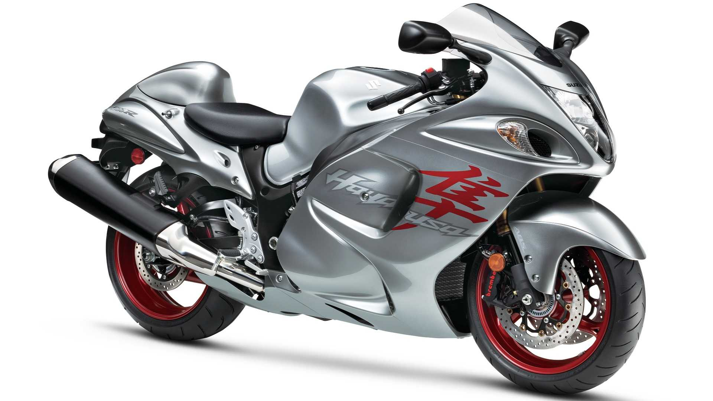
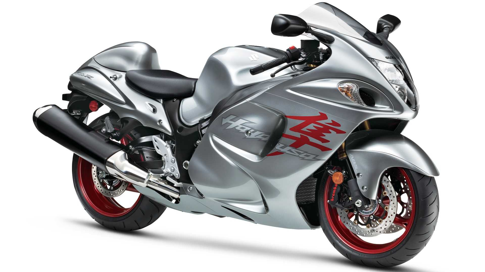

Вражаючий супербайк від Yamaha. Ця серія отримала старт в 1998 році, а нещодавно був відзначений випуск 50 серії. Новий YZF R1 має обсяг 0.998 літра, 20 клапанів - похилий передній 4 циліндровий двигун. Потужність в 180 л. с., 12500 rpm дозволяють розігнатися до 186 mph.Ключові характеристики:- двигун об'ємом 0.998 літра, 20 клапанів, рідинна система охолодження;- 180 к. с., 12500 rpm;- шести ступенева коробка передач, максимальна швидкість 186 mph.
Детальніше
Відзначений як найпотужніший серійний байк книгою рекордів Гіннеса. Модель оснащена турбовальным двигуном, що використовує теплову енергію з вихлопної труби як вихідну потужність. Є турбонадувальный двигун Rolls-Royce 250-C18, з 320 кінських сил і досягає 52000 обертів. Рекордна швидкість 227 mph.Ключові характеристики:- привід від провідних коліс, турбовальний двигун;- 320 кінських сил, 52000 rpm;- максимальна швидкість – 227 mph.
Детальніше 

Найшвидший і найкращий мотоцикл в світі з коли-небудь зроблених. Літає зі швидкістю – 350 mph (563 км/ч). Двигун – Viper V-10, 500 л. с. Розганяється до 60 mph всього за 1,5 секунди. На відміну від інших байків має 4 колеса. Вперше був представлений на міжнародній виставці в Північній Америці в 2003 році.Ключові характеристики:- 10 циліндровий V-подібний двигун, 350 кінських сил;- максимальна швидкість 350 mph, розганяється до 60 mph за 1,5 секунди;- двох ступінчаста ручна коробка передач;- випущено всього 9 одиниць.
Детальніше